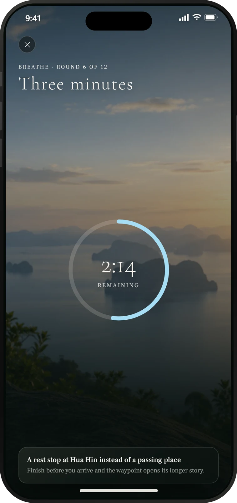
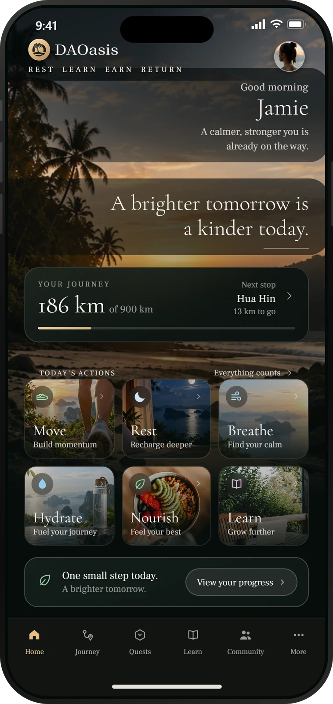
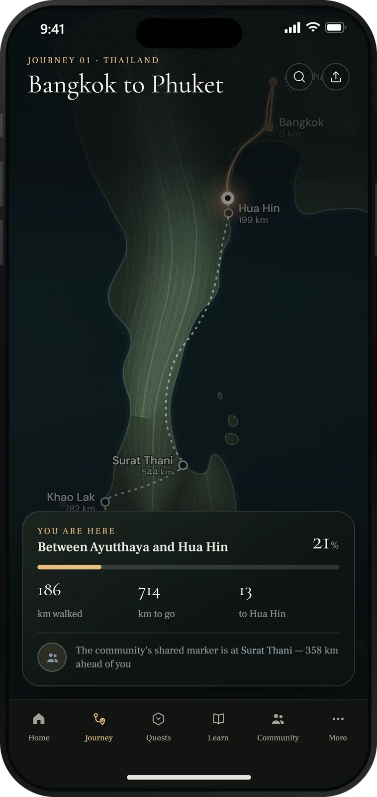
The everyday part of DAOasis.
You have probably tried wellness apps before. DAOasis is different in one important way — every action you take moves you forward and builds toward something real.
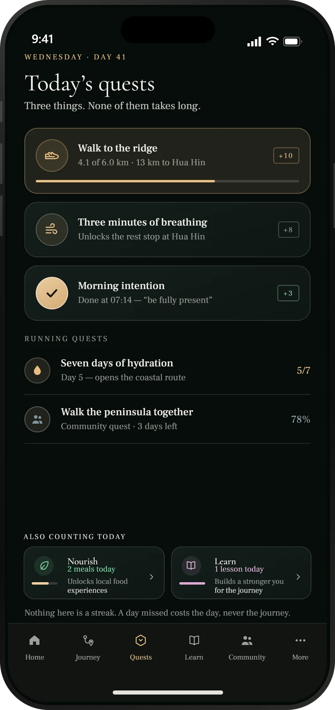
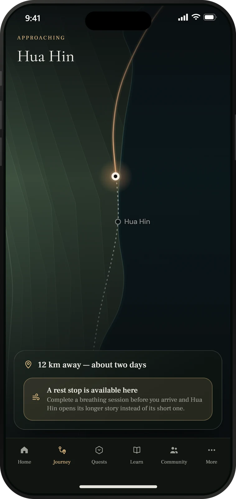
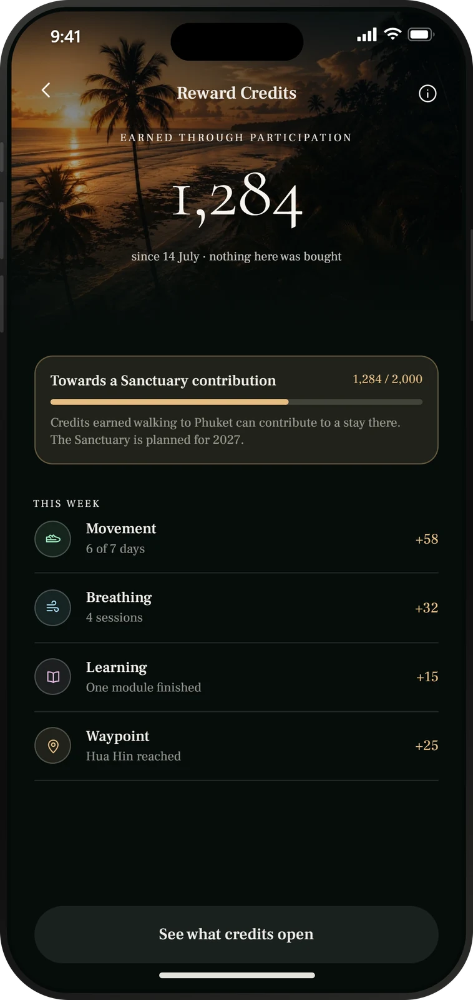
900 kilometres of Thailand. Your steps are the engine — and every other habit you build makes you faster. This is not a metaphor. It is a real route, animated inside the app, that you walk one day at a time.
Bangkok to Phuket is just the beginning. Once completed, the next Journey unlocks — a new route, a new challenge, a new reason to keep going. The habit-building never stops. The rewards never stop either.
Most wellness apps track your metrics in isolation. DAOasis connects them. Every habit feeds the same journey — together they move you further, faster.
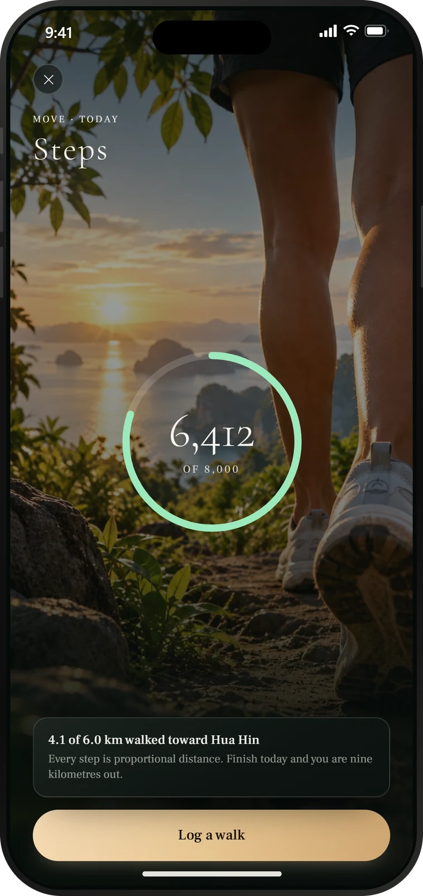
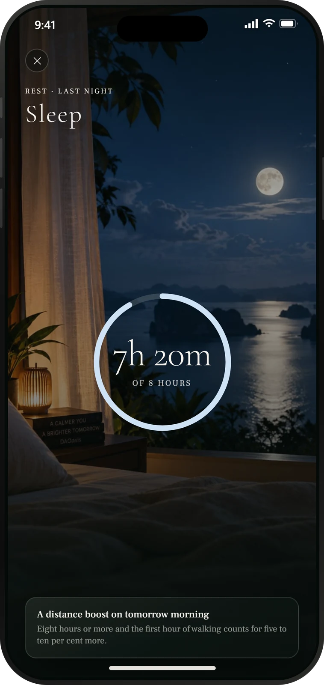
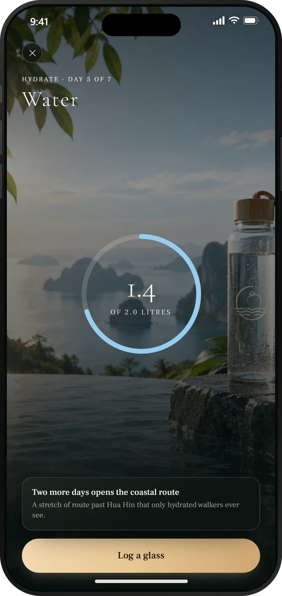
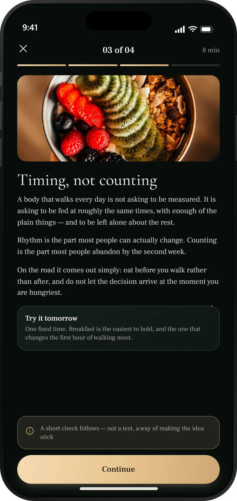
Not one of those was a separate app, a separate score or a separate streak. Every one of them moved the same marker.
All six on one screen. Each has its own inside the app — and each one ends in the same place.
Complete Bangkok to Phuket and the world opens up. Every new Journey brings a new route, new boosters, and new Reward Credits to earn. The ecosystem keeps going because you keep going.
Two tracks, specified across four depth levels each. The pilot launches with twenty lessons — ten per track — and grows on what the first cohorts show. App screens here preview the full specified library, not the pilot scope. Every lesson earns Reward Credits directly. You don't need to understand blockchain to start — you will by the time you finish.
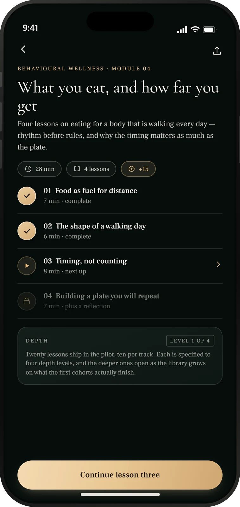
DAOasis Reward Credits — DRC — accumulate every time you complete a quest, finish a lesson, or hit a daily target. DRC is designed to convert to $DVT, one way and by choice, and $DVT is the layer that carries deeper participation across the ecosystem.
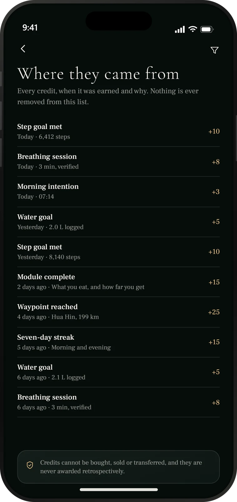
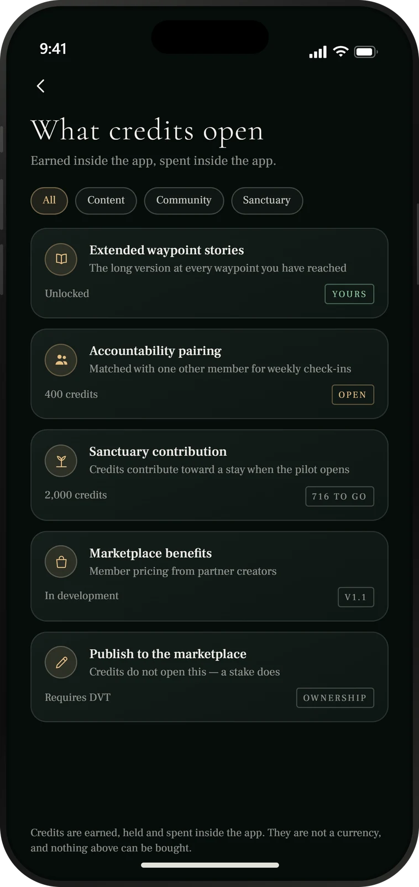
Your DRC and $DVT have a real home. Explore what the DAOasis Marketplace is being built to make possible.
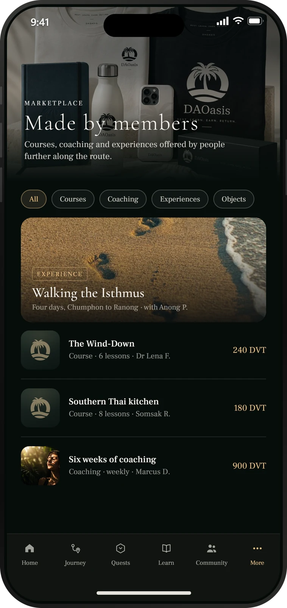
Retreats, workshops and stays at the DAOasis Sanctuary in Phuket, planned for 2027 — with $DVT designed to carry access. Every step in the app was moving you here.
Curated partner offers from wellness brands aligned with the DAOasis ethos — from gym memberships and health testing to coaching and nutrition services.
DAOasis apparel, accessories and limited drops — earned through consistency, not simply purchased.
DAOasis reads from the health platforms you already use, so your data flows in on its own — steps, sleep, heart rate. Apple Health and Google Health Connect are in scope for first release; the rest are planned. You live your life. The app does the rest.
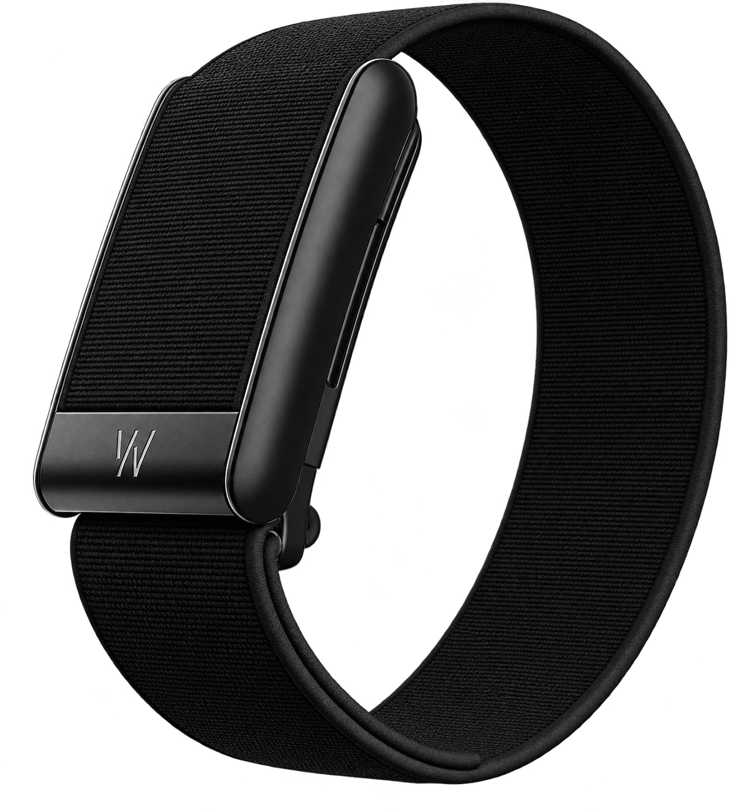
Join a community building better habits one deliberate day at a time — and being recognised for doing it.
Join the Waitlist